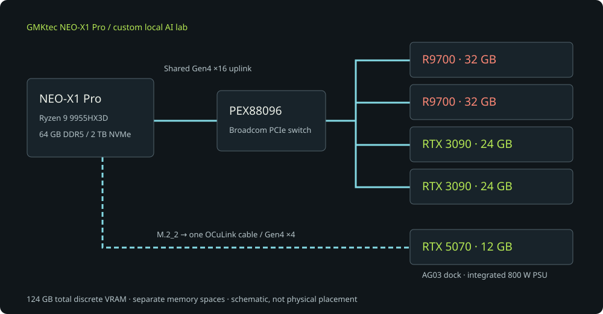

ZERO SECURITY / INSIDE THE HOMELAB
Small host.
Big ambitions.
GMKtec NEO-X1 Pro
Personal build · October 2026
Personal build · October 2026

Loading the 3D view. The topology above is available without WebGL.
350 × 165 × 265 mm · bodyLime mesh · carry handles · dual-fan AIO
Drag to orbit
Open the chassis to reveal the cooling and mainboard.